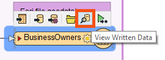
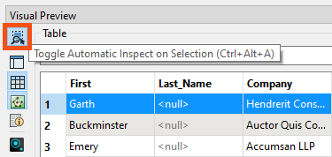
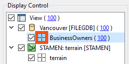
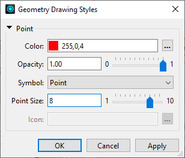

After completing this lesson, you’ll be able to:
An essential step in a data transformation process is data inspection. It is crucial to inspect the output dataset to ensure that the process is successful.
Continuing with his workspace, Sven uses FME Workbench (2023.0 or later) to open the BusinessOwners written data in Visual Preview by selecting it and then clicking View Written Data.

Now that the BusinessOwners feature class (a geodatabase feature class is the equivalent of an FME feature type) in the Vancouver.gdb geodatabase is loaded into Visual Preview, Sven uses the Visual Preview toolbar to control the display. The Visual Preview will display the geometry of features in the Graphics View and the attributes in the Table View.
By default, Visual Preview will display whichever object (feature type or transformer) is selected on the canvas automatically. If Sven selects another object on the canvas, Visual Preview will display that data. Sven doesn't want that to happen because he'll lose the view of the BusinessOwners feature type, so he clicks the Toggle Automatic Inspect on Selection button on the left side of Visual Preview to turn it off.

Sven wants to change the color and size of the points shown in the Graphics View to make the points easier to see against the background map. He clicks the Display Control button to open Display Control, which lets him see a list of the layers being inspected. Sven unchecks the box next to Default Terrain [STADIA] to turn off the background map for now; this will allow the points to be seen more clearly. Clicking on the grid icon next to BusinessOwners opens the Geometry Styles dialog. Here Sven can change the display symbology and color of the points. Sven selects red, increases the point size to 8, then turns the background map back on.
 
Sven toggles off Display Control and Table View to allow more space for the Graphics View.
Map tiles by Stamen Design, under CC BY 3.0. Data by OpenStreetMap, under CC BY SA.
Sven clicks on Zoom Extents to see all of the data points.

Map tiles by Stamen Design, under CC BY 3.0. Data by OpenStreetMap, under CC BY SA.
Visual Preview and the stand-alone application Data Inspector are not a Geographic Information System; they can not be used to create polished cartographic output, conduct interactive spatial analysis, or edit data. The purpose of Visual Preview and Data Inspector is simply to inspect data.
Use Pan and Zoom to find the northernmost public art installation. Use Select to select it.
Use the Table View or Feature Information to take note of the Title of the installation.

Map tiles by Stamen Design, under CC BY 3.0. Data by OpenStreetMap, under CC BY SA.